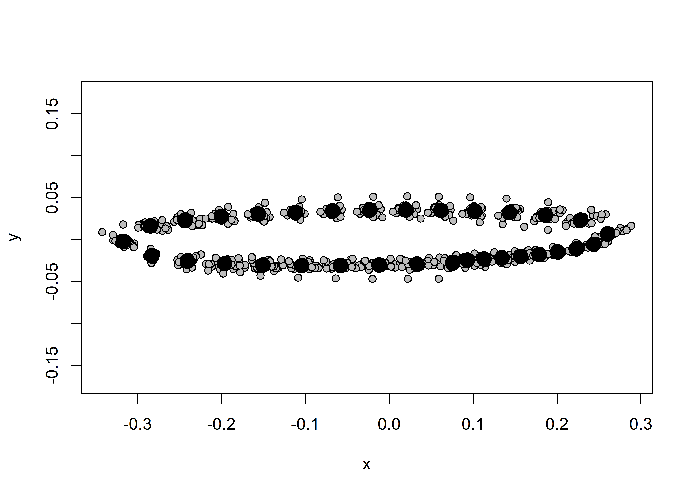
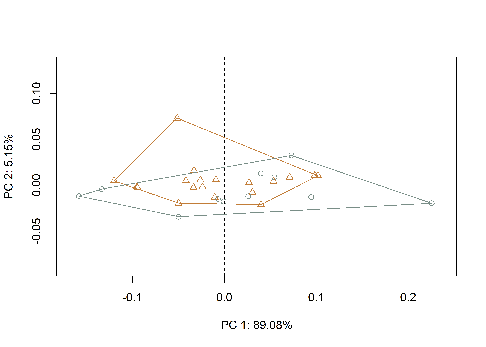

Chapter 2 GM - Site/Raw Material
Elliptical bifaces from the Millsap Cache and Jowell Farm were used to examine whether their morphology remains stable, or expresses morphological variability by site/raw meterial. Variability in elliptical biface morphology provides evidence associated with differences in morphology as a function of geography/raw material.
This analysis follows recent analyses of Perdiz arrow points (Selden and Dockall, in review) and Gahagan biface morphology across the southern Caddo area and central Texas (Selden Jr., Dockall, and Shafer 2018; Selden Jr., Dockall, and Dubied 2020; Selden 2022), where Perdiz arrow points and Gahagan bifaces have been found to differ in shape across the same geography as Caddo bottles (Selden Jr. 2018a, 2018b, 2019, 2021). This analysis also follows another geometric morphometric analysis in which Perdiz arrow points from the ancestral Caddo area were found to differ as a function of time, raw material, and burial context (Selden Jr et al. 2021b).
2.1 Load packages + data
# load required analysis packages
library(here)
library(StereoMorph)
library(geomorph)
library(tidyverse)
library(wesanderson)
library(ggplot2)
# read data and define number of sLMs ----
shapes <- readShapes("shapes")
shapesGM <- readland.shapes(shapes, nCurvePts = c(10, 10, 15))
# read qualitative data
qdata <- read.csv("qdata.merged.csv",
header = TRUE,
row.names = 1)2.2 Generalised Procrustes Analysis
Landmark data were aligned to a global coordinate system (Kendall 1981, 1984; Slice 2001), achieved through generalized Procrustes superimposition (Rohlf and Slice 1990) performed in R 4.1.3 (R Core Development Team, 2022) using the geomorph library v. 4.0.3 (Adams et al. 2017; Adams and Otarola-Castillo 2013; Baken et al. 2021). Procrustes superimposition translates, scales, and rotates the coordinate data to allow for comparisons among objects (Gower 1975; Rohlf and Slice 1990). The geomorph package uses a partial Procrustes superimposition that projects the aligned specimens into tangent space subsequent to alignment in preparation for the use of multivariate methods that assume linear space (Rohlf 1999; Slice 2001).
# gpa ----
Y.gpa <- gpagen(shapesGM, print.progress = FALSE)
# plot
plot(Y.gpa)
# geomorph data frame ----
gdf <- geomorph.data.frame(shape = Y.gpa$coords,
size = Y.gpa$Csize,
site = qdata$site)
# add centroid size to qdata
qdata$csz <- Y.gpa$Csize2.3 Principal Components Analysis
Principal components analysis (Jolliffe 2002) was used to visualise shape variation among the Perdiz arrow points. The shape changes described by each principal axis are commonly visualized using thin-plate spline warping of a reference 3D mesh (Klingenberg 2013; Sherratt et al. 2014).
# principal components analysis ----
pca<-gm.prcomp(Y.gpa$coords)
summary(pca)##
## Ordination type: Principal Component Analysis
## Centering by OLS mean
## Orthogonal projection of OLS residuals
## Number of observations: 30
## Number of vectors 29
##
## Importance of Components:
## Comp1 Comp2 Comp3 Comp4 Comp5 Comp6
## Eigenvalues 0.006537853 0.0003781135 0.0003022611 0.0000559455 2.637868e-05 1.078776e-05
## Proportion of Variance 0.890791573 0.0515184909 0.0411834968 0.0076226514 3.594131e-03 1.469847e-03
## Cumulative Proportion 0.890791573 0.9423100637 0.9834935605 0.9911162119 9.947103e-01 9.961802e-01
## Comp7 Comp8 Comp9 Comp10 Comp11 Comp12
## Eigenvalues 1.009261e-05 4.982089e-06 4.101647e-06 2.308128e-06 2.128514e-06 1.363224e-06
## Proportion of Variance 1.375132e-03 6.788165e-04 5.588550e-04 3.144856e-04 2.900130e-04 1.857412e-04
## Cumulative Proportion 9.975553e-01 9.982341e-01 9.987930e-01 9.991075e-01 9.993975e-01 9.995832e-01
## Comp13 Comp14 Comp15 Comp16 Comp17 Comp18
## Eigenvalues 9.015868e-07 8.306757e-07 3.910904e-07 2.564709e-07 2.022720e-07 1.312004e-07
## Proportion of Variance 1.228424e-04 1.131807e-04 5.328661e-05 3.494452e-05 2.755984e-05 1.787624e-05
## Cumulative Proportion 9.997061e-01 9.998193e-01 9.998725e-01 9.999075e-01 9.999350e-01 9.999529e-01
## Comp19 Comp20 Comp21 Comp22 Comp23 Comp24
## Eigenvalues 1.084451e-07 5.534632e-08 5.051539e-08 4.411557e-08 3.291932e-08 2.804381e-08
## Proportion of Variance 1.477579e-05 7.541013e-06 6.882792e-06 6.010807e-06 4.485303e-06 3.821008e-06
## Cumulative Proportion 9.999677e-01 9.999752e-01 9.999821e-01 9.999881e-01 9.999926e-01 9.999964e-01
## Comp25 Comp26 Comp27 Comp28 Comp29
## Eigenvalues 1.071824e-08 7.727764e-09 3.729096e-09 2.821059e-09 1.127017e-09
## Proportion of Variance 1.460375e-06 1.052919e-06 5.080945e-07 3.843732e-07 1.535576e-07
## Cumulative Proportion 9.999979e-01 9.999990e-01 9.999995e-01 9.999998e-01 1.000000e+00# set plot parameters
pch.gps <- c(1:2)[as.factor(qdata$site)]
col.gps <- wes_palette("Moonrise2")[as.factor(qdata$site)]
col.hull <- c("#C27D38", "#798E87")
# plot pca by merged
pc.plot <- plot(pca,
asp = 1,
pch = pch.gps,
col = col.gps)
shapeHulls(pc.plot,
groups = qdata$site,
group.cols = col.hull)
2.4 Procrustes ANOVA
To assess whether shape and size differ by size class, Procrustes ANOVAs (Goodall 1991) were run that enlist effect-sizes (zscores) computed as standard deviates of the generated sampling distributions (Collyer, Sekora, and Adams 2015). A residual randomization permutation procedure (RRPP; n = 10,000 permutations) was used for all Procrustes ANOVAs (Adams and Collyer 2015; Collyer and Adams 2018), which has higher statistical power and a greater ability to identify patterns in the data should they be present (Anderson and Ter Braak 2003).
# ANOVA ----
# shape
fit.sh <- procD.lm(shape ~ site,
data = gdf,
print.progress = FALSE,
iter = 9999)
# shape as a function of site/raw material?
anova(fit.sh)##
## Analysis of Variance, using Residual Randomization
## Permutation procedure: Randomization of null model residuals
## Number of permutations: 10000
## Estimation method: Ordinary Least Squares
## Sums of Squares and Cross-products: Type I
## Effect sizes (Z) based on F distributions
##
## Df SS MS Rsq F Z Pr(>F)
## site 1 0.005626 0.0056261 0.02643 0.7602 0.27634 0.4022
## Residuals 28 0.207216 0.0074006 0.97357
## Total 29 0.212842
##
## Call: procD.lm(f1 = shape ~ site, iter = 9999, data = gdf, print.progress = FALSE)# size
fit.sz <- procD.lm(size ~ site,
data = gdf,
print.progress = FALSE,
iter = 9999)
# size as a function of site/raw material?
anova(fit.sz)##
## Analysis of Variance, using Residual Randomization
## Permutation procedure: Randomization of null model residuals
## Number of permutations: 10000
## Estimation method: Ordinary Least Squares
## Sums of Squares and Cross-products: Type I
## Effect sizes (Z) based on F distributions
##
## Df SS MS Rsq F Z Pr(>F)
## site 1 708.16 708.16 0.36243 15.917 2.9472 8e-04 ***
## Residuals 28 1245.78 44.49 0.63757
## Total 29 1953.95
## ---
## Signif. codes: 0 '***' 0.001 '**' 0.01 '*' 0.05 '.' 0.1 ' ' 1
##
## Call: procD.lm(f1 = size ~ site, iter = 9999, data = gdf, print.progress = FALSE)2.5 Morphological Disparity
The trajectory analysis was followed by an analysis of morphological disparity (Collyer and Adams 2020; Foote 1993; Zelditch et al. 2004) to identify potential differences in morphological diversity between size classes.
# morphological disparity ----
# do any of the groups display greater shape variation among
# individuals relative to the other group?
morphol.disparity(shape ~ site,
groups = qdata$site,
data = gdf,
print.progress = FALSE,
iter = 9999)##
## Call:
## morphol.disparity(f1 = shape ~ site, groups = qdata$site, iter = 9999,
## data = gdf, print.progress = FALSE)
##
##
##
## Randomized Residual Permutation Procedure Used
## 10000 Permutations
##
## Procrustes variances for defined groups
## Jowell Farm Millsap Cache
## 0.011094010 0.004483247
##
##
## Pairwise absolute differences between variances
## Jowell Farm Millsap Cache
## Jowell Farm 0.000000000 0.006610763
## Millsap Cache 0.006610763 0.000000000
##
##
## P-Values
## Jowell Farm Millsap Cache
## Jowell Farm 1.0000 0.0648
## Millsap Cache 0.0648 1.0000# do any of the groups display greater size variation among
# individuals relative to the other group?
morphol.disparity(size ~ site,
groups = qdata$site,
data = gdf,
print.progress = FALSE,
iter = 9999)##
## Call:
## morphol.disparity(f1 = size ~ site, groups = qdata$site, iter = 9999,
## data = gdf, print.progress = FALSE)
##
##
##
## Randomized Residual Permutation Procedure Used
## 10000 Permutations
##
## Procrustes variances for defined groups
## Jowell Farm Millsap Cache
## 16.18733 56.19584
##
##
## Pairwise absolute differences between variances
## Jowell Farm Millsap Cache
## Jowell Farm 0.00000 40.00852
## Millsap Cache 40.00852 0.00000
##
##
## P-Values
## Jowell Farm Millsap Cache
## Jowell Farm 1.0000 0.1366
## Millsap Cache 0.1366 1.0000